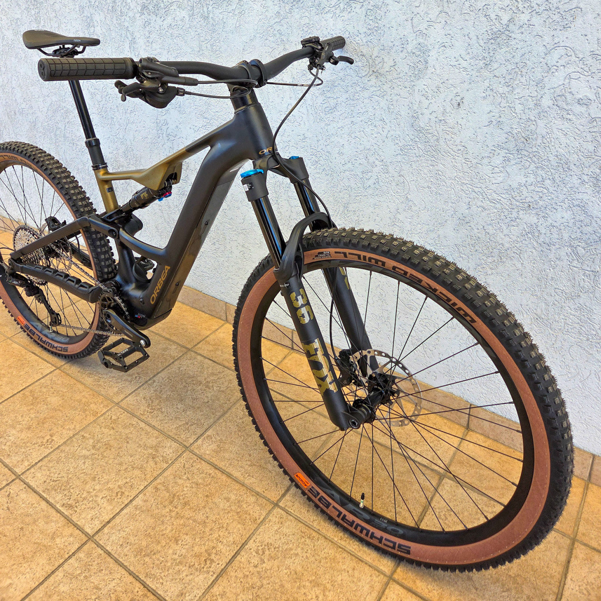
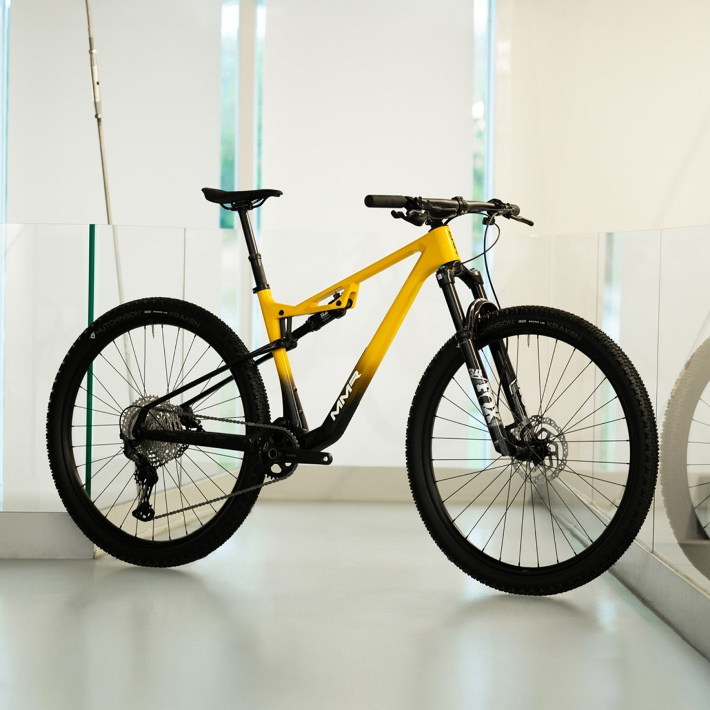
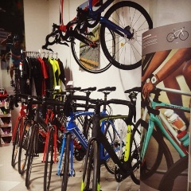
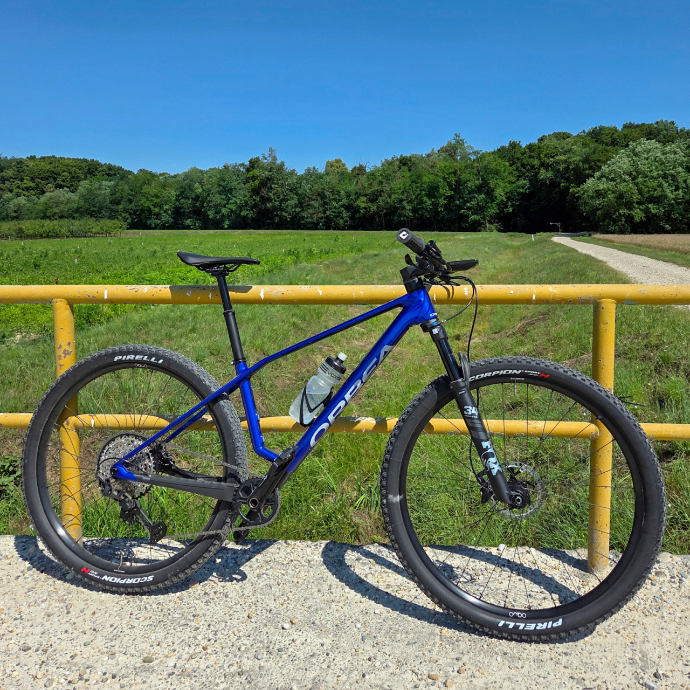
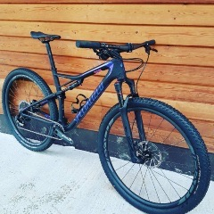
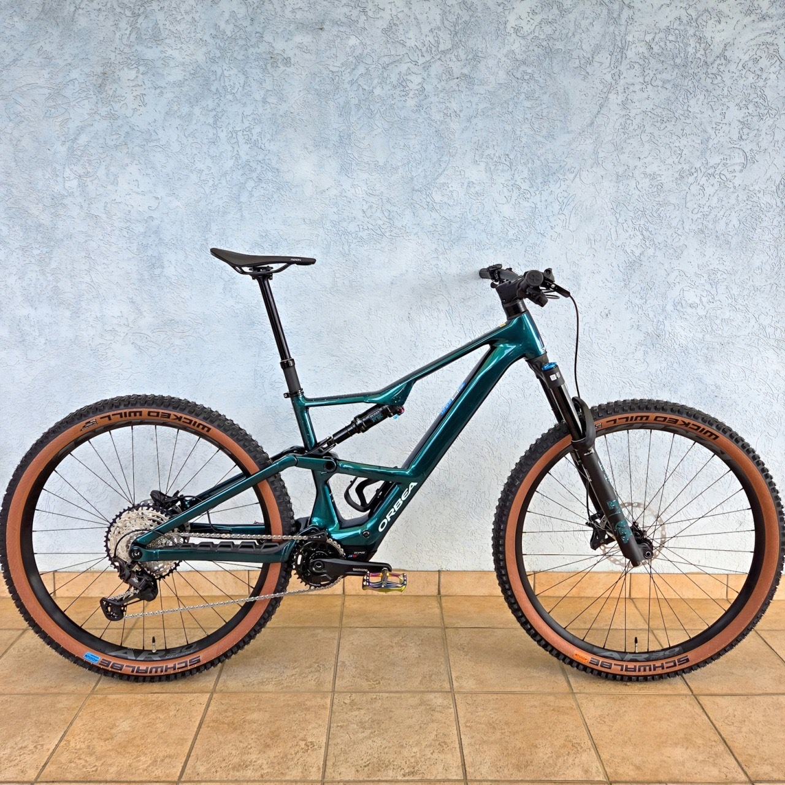

Prodaja bicikala
Brdski, cestovni, gravel, cross, gradski, dječji i BMX bicikli – i električni u MTB, cestovnoj i gradskoj izvedbi.
- MTB
- Cestovni
- Gravel
- E-bicikli
- Dječji
Bike shop & servis Kosport od 2012. prodaje bicikle, e-bicikle, dijelove i opremu renomiranih brendova – i brine se da vaš bicikl vozi kako treba.

Naši djelatnici imaju višegodišnje iskustvo u biciklizmu – pomoći će vam dobrim savjetom pri kupnji i stručnim, kvalitetnim servisom vašeg bicikla.
Brdski, cestovni, gravel, cross, gradski, dječji i BMX bicikli – i električni u MTB, cestovnoj i gradskoj izvedbi.
Stručan i kvalitetan servis vašeg bicikla u radionici u Strahonincu. Javite se telefonom ili pošaljite upit, pa se dogovorimo.
Kotači i pedale, alati, bidoni, blatobrani, ciklokompjuteri, svjetla, trenažeri i biciklistička odjeća.


Bike shop & servis KOSPORT posluje od 9. ožujka 2012. godine u sklopu tvrtke KOLAR-1 d.o.o. Zastupamo više renomiranih brendova iz svijeta biciklizma.
Uvoznici smo nekoliko brendova, a surađujemo i s drugim uvoznicima, pa vam možemo ponuditi velik izbor bicikala i dijelova. Naši djelatnici imaju višegodišnje iskustvo u biciklizmu i spremni su vam u svakom trenutku dati dobar savjet ili preporuku pri kupnji bicikla – i stručno servisirati vaš bicikl.
LP, Davor




Uvoznici smo nekoliko brendova, a s ostalim uvoznicima surađujemo – pa ako nešto nije na popisu, pitajte.
Trgovina i servis su na adresi Ulica Matije Gupca 1A u Strahonincu (40000), uz Čakovec. Na kartu vas vodi gumb „Karta” na dnu ekrana ili poveznica u kontaktu.
Ponedjeljak, utorak i srijeda od 8 do 16 h, četvrtak i petak od 12 do 18 h, subota od 8 do 12 h.
Da. Kosport je bike shop i servis: osim prodaje, naši djelatnici servisiraju bicikle. Najbrže je nazvati 091 569 4731 ili poslati upit za servis preko obrasca.
U ponudi su bicikli i oprema brendova Orbea, MMR, Lapierre, Giant, Cube, Wahoo i Econo, uz dijelove i opremu Shimano, SRAM i Topeak. Uvoznici smo nekoliko brendova i surađujemo s drugim uvoznicima, pa možemo ponuditi velik izbor bicikala i dijelova.
Da. Narudžbe se isporučuju na području Hrvatske u roku do 5 radnih dana (osim otoka i dubrovačke regije). Robu možete preuzeti i osobno u trgovini u Strahonincu.
Općom uplatnicom ili internet bankarstvom, pouzećem u gotovini, osobno pri preuzimanju te karticama Maestro, MasterCard, Visa i Visa Inspire.
| Ponedjeljak | 8 – 16 h |
| Utorak | 8 – 16 h |
| Srijeda | 8 – 16 h |
| Četvrtak | 12 – 18 h |
| Petak | 12 – 18 h |
| Subota | 8 – 12 h |
| Nedjelja | zatvoreno |